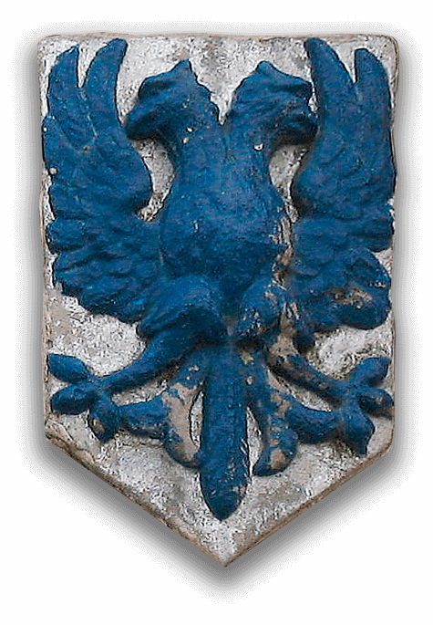

История шпалерного ткачества
Шпалерное ткачество – одно из древнейших ремесел, получило распространение в странах Западной Европы в период раннего средневековья. Его истоки восходят к шерстоткачеству – одному из наиболее развитых ремесленных производств, обособившегося и выделившегося от сельского хозяйства на территории экономически развитых областей Западной Европы уже к середине XI века. Благодаря знакомству с приемами старой гало-римской техники и близости оживленных портов Ганзы профессиональное ремесленное шерстоткачество начало приобретать промышленный характер. Технологические приемы, используемым при изготовлении шерстяных тканей были близки технике шпалерного ткачества, насчитывающей многовековую историю.
В средневековых Нидерландах производство тканей и шпалер было одна из главных отраслей промышленности, поэтому в крупнейших текстильных городах действовали многочисленные и хорошо организованные объединения красильщиков. Согласно цеховым статутам (ордонансам), утвержденных городскими властями и предписывающих четкое разделение труда, красильщики имели монополию на окрашивание тканей и ниток. Согласно утвержденным правилам, шелковые и шерстяные нити, используемые при изготовлении шпалер, окрашивались в руне (пасмах). Искусство крашения шерсти начало развиваться на юге Фландрии. В ходе исторического развития сукноделия, в состав которого входило и красильное производство, стало перемещаться на север, и к XIV веку получило распространение в городах Брабанта: Брюсселе, Брюгге, Генте, Лувене и Мехелене (Малине).

Согласно герцогской хартии 1306 года красильные мастерские Брюсселя входили в состав двух различных гильдий: мастеров «красильного дела» (meestre van de ververen) и мастеров «горячего крашения» (ketelknapen). Как и во всех городских гильдиях, владельцы красильных мастерских подчинялись старейшинам гильдий — дуайенам, избиравшимся ежегодно из состава самих мастеров и представлявшим их интересы в коллегии эшевенов — представителей города.
Герцогская хартия определяла группы красителей, которое надлежало использовать в красильных мастерских города. Для получения каждого цвета предусматривалось использование переделённых красителей. Так, для крашения в синий цвет применялась вайда (Isatis tinctoria L.); в красный — марена (Rubia tinctorum), кермес (Kermesidae L.), который ввозился из Восточной Европы и с Ближнего Востока и стоил баснословных денег; в желтый — резеда (Reseda luteola). Начиная с середины XVI века красильные мастерские Европы стали использовать красители красного цвета, привезенные из заморских колоний в Америке: кошениль (Dactylopius coccus Costa L.) и бразильское дерево (Haematoxylum brasiletto L.). Для получения определенных оттенков применялись протравы: винный камень, квасцы, соли железа — олова и меди. С начала XVI века вайда постепенно стала вытесняться другим индигоносным растением — индигоферой красильной (Indigofera tinctoria L.), поскольку его красящие свойства гораздо более эффективны.
К 1370 году различия в рангах мастеров крашения постепенно были заменены на различия в технологии крашения и используемом красильном сырье. Эти изменения в структуре так называемых «младших» цехов (красильщиков) нашли свое отражение в реестре гильдии суконщиков Брюсселя 1416-1417 годах, уточнявшей, что мастера красильного дела составляют две различные гильдии.  Начиная с позднего Средневековья красильщиков синего цвета, окрашивавших ткани и нитки в холодном растворе, стали называть «синильщиками» или «красильщиками чана» (‘blauwevaerwers’ — ‘blauwers’). Красильщики, специализирующиеся на синем цвете, использовали большие деревянные или каменные чаны, в которых происходил сложный процесс брожения — подготовки красильной ванны. Процесс окрашивания тканей и ниток занимал достаточно долгое время и происходил в холодном растворе. Во Фландрии эмблемой гильдий красильщиков синего цвета был двуглавый синий орел на серебряном фоне.
{kind=link}
Мастера окрашивания в красное (‘rootvaerwers’ —‘roodververs’), получили название «горячих» (‘sieders’ — ‘zieders’), так как при первом погружении тканей и ниток в красильный чан, приходило их кипячение вместе с солями протравы. Согласно установленным правилам, мастер не имел право работать с тканями или с красками, на которые у не было разрешения. Например, красильщик, имеющий разрешение окрашивать шерсть в красный цвет и желтый цвет, не мог окрашивать ее в синий, и наоборот. Эмблемой мастерам окрашивания в красное, был золотой орел на красном фоне.
{kind=link}
Как правило, красильные мастерские располагались на берегу реки, что было обусловлено необходимостью иметь достаточное количество чистой воды. Красильные составы нагревались на каменных печах, часто в каменных чанах, расположенных на вершине печи. Мотки пряжи погружались в красильный состав и перемешивались деревянной палкой. По окончании процесса крашения нитки ополаскивались в проточной воде и отжимались в плетеных корзинах. Затем мотки пряжи развешивались на палках для окончательного просушивания.
{kind=link}
{kind=link}
{kind=link}
В XVI веке Брюссельские красильные мастерские, и особенно красильщики синего цвета, пострадали от соперничества с другими городами. Расцвет Антверпена, как центра торговли сырьем и текстильной продукцией, в последней четверти XV века был непосредственно связан с развитием красильного производства. Поскольку мастерские Антверпена не были традиционно ограничены жесткими положениями устава гильдии, многие иностранные мастера крашения переезжали в европейскую коммерческую столицу. Здесь они могли использовать колониальные красители и производить продукцию по более низким ценам, по сравнению с брюссельскими мастера.
Так как муниципалитет Брюсселя был заинтересован в поддержке местных ремесленных производств, он предписал всем изготовителям тканей и шпалер использовать нити, окрашенные только в мастерских Брюссельских красильщиков синего цвета. Помимо принятия протекционистских мер, городская администрация приветствовала привлечение иностранных специалистов и технологий в красильное производство города.
Тем не менее, в 1582 году был принят указ, который обязывал иностранных мастеров регистрироваться в городской гильдии, что указывало на особую политику в отношении иностранных технологий, так как регистрация явно обязывала использовать традиционные производственные процессы крашения. Получение разрешения на использование новых красителей или технологий требовало получение специального разрешения от городских властей и гильдии.